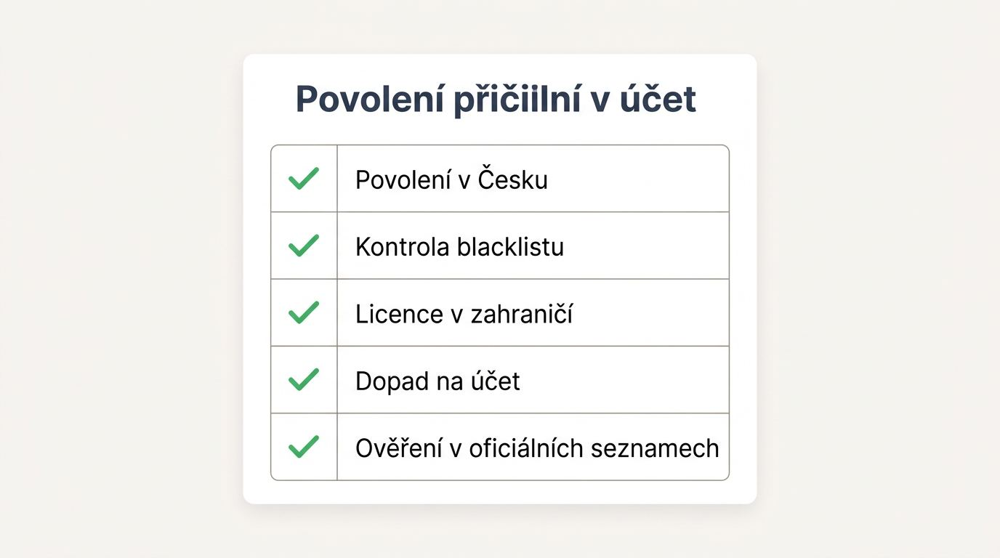
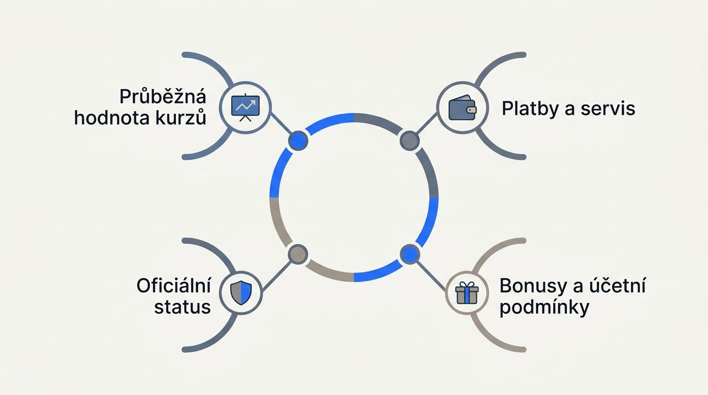
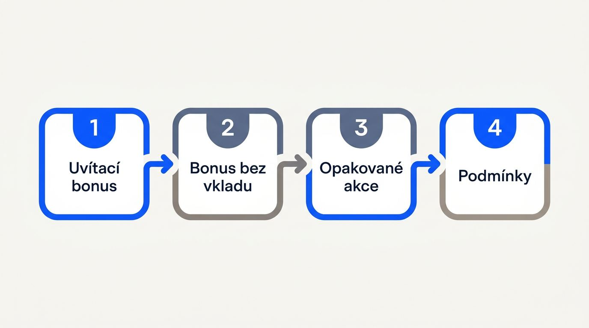
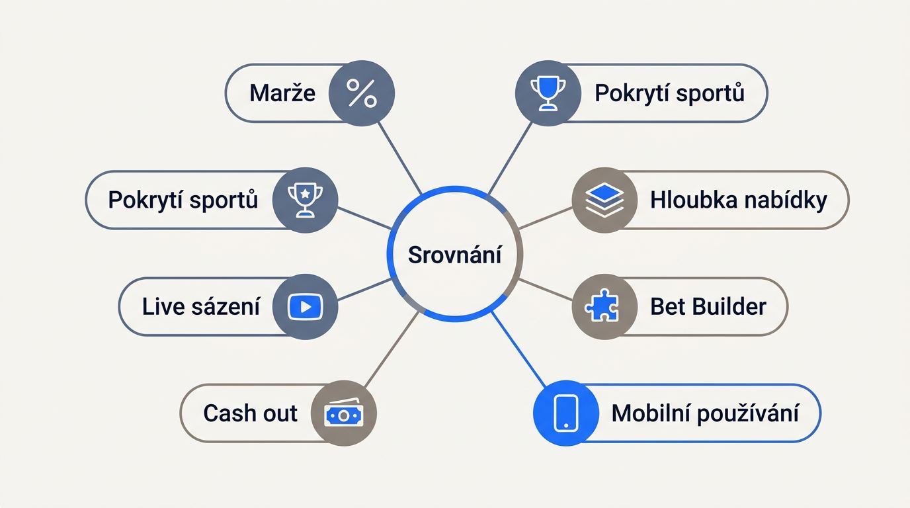
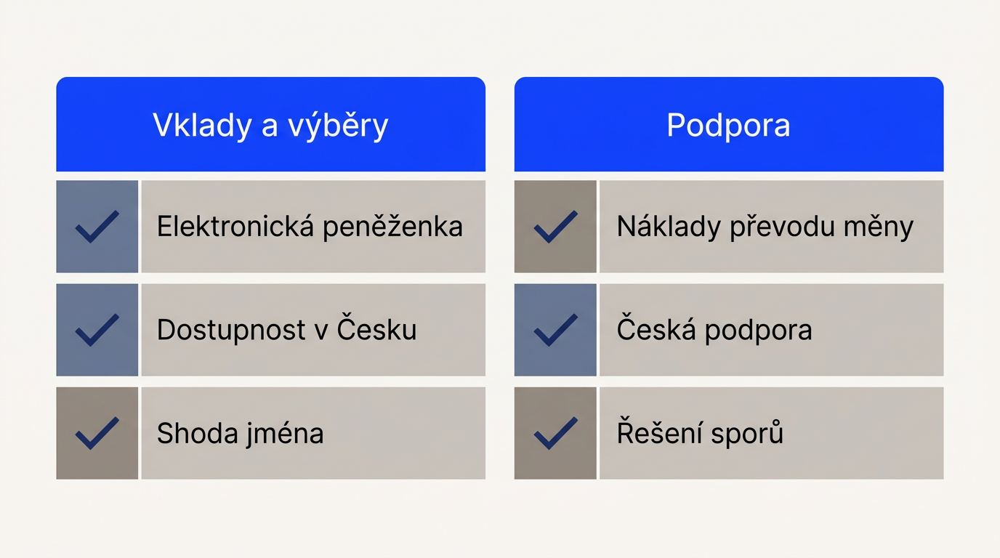

Jak ověříte dostupnost a důvěryhodnost sázkové kanceláře

České povolení Ministerstva financí ČR a licence vydaná v jiné jurisdikci představují dva odlišné provozní rámce, které ovlivňují přístup k účtu, vklady, výběry i řešení sporů. Zahraniční sázkové kanceláře proto porovnávejte až poté, co ověříte jejich status pro území České republiky.
- Povolení v Česku: Legální online sázení z území ČR vyžaduje platné povolení podle zákona o hazardních hrách. Sázkové kanceláře s českou licencí hledejte v seznamu povolených provozovatelů hazardních her Ministerstva financí ČR.
- Kontrola blacklistu: Seznam nepovolených internetových her uvádí nelegální sázkové stránky. Poskytovatelé internetu musí po zařazení webu přístup ve stanovené lhůtě blokovat a banky i platební instituce blokují platby na uvedené weby.
- Licence v zahraničí: Česká hazardní licence, licence Malta Gaming Authority a licence Curaçao mohou určovat rozdílné podmínky účtu, ochranu prostředků a postupy pro stížnost. Zahraniční licence sama o sobě nepotvrzuje dostupnost služby pro české hráče.
- Dopad na účet: Blokované sázkové weby mohou přerušit přístup, vklad i výběr. Účast na nepovolené zahraniční hazardní hře může české právo postihnout správní pokutou.
Ověření v oficiálních seznamech: Na webu Ministerstva financí ČR vyhledejte provozovatele nejprve v seznamu povolených provozovatelů hazardních her a poté v seznamu nepovolených internetových her. Kontrolujte provozní společnost, nikoli pouze obchodní název webu.
Legální zahraniční sázkovky pro český účet tedy posuzujte podle českého povolení, zatímco bezpečné zahraniční sázkovky licencované jinde vyžadují zvláštní kontrolu dostupnosti, podmínek a možností řešení sporů. U výher mohou vzniknout daňové povinnosti v Česku.
Podle čeho porovnáváme zahraniční sázkové kanceláře

Recenze zahraničních sázkovek stavíme na údajích, které si můžete před vkladem ověřit, a na jasně oddělených redakčních pozorováních. Označení nejlepší zahraniční sázkovky nepoužíváme bez rovnocenných podkladů pro srovnávané možnosti.
U licencí, bonusů, plateb, marží, rychlosti výplaty a funkcí uvádějte datum kontroly přímo u konkrétního tvrzení. Hodnocení zahraničních sázkových kanceláří nenahrazuje kontrolu aktuálních podmínek účtu.
Kritéria, která zůstávají důležitá po uvítacím bonusu
Dlouhodobou hodnotu účtu určují podmínky každé sázky a každého výběru, kdežto uvítací nabídka působí hlavně při registraci. Výhoda v jedné kategorii proto nevyrovná slabší podmínky v jiné.
- Průběžná hodnota kurzů: Porovnávejte kurzy sázkových kanceláří a jejich marže na český fotbal, hokej, biatlon, zimní sporty i velké turnaje. V období mistrovství světa, evropských šampionátů a extraligového play-off sledujte stejné trhy ve stejný čas.
- Použitelnost nabídky: Široká nabídka sportovních sázek má hodnotu tehdy, když najdete dost trhů i během utkání, Bet Builder funguje pro relevantní zápasy a cash out je dostupný u podaných sázek.
- Platby a servis: Ověřte rychlost výplaty výher, podporu české koruny, podmínky výběru a zákaznickou podporu v češtině. Více metod pro vklad nepomůže, pokud výběr omezuje měna nebo zdlouhavé zpracování.
- Bonusy a účetní podmínky: Sledujte srozumitelnost bonusu, průběžné akce, limity účtu a pravidla pro omezení účtu. Vyšší propagační nabídka může mít nižší hodnotu při krátké platnosti nebo přísném protočení.
Jaké důkazy stojí za hodnocením
Ověřitelná fakta z úředních zdrojů a obchodních podmínek oddělujeme od redakční zkušenosti s používáním účtu. Doporučení vychází jen z aktuálních a srovnatelných podkladů.
- Oficiální status u Ministerstva financí ČR, včetně povolení, whitelistu, blacklistu a příslušné licence.
- Zveřejněné platební metody sázkových kanceláří, poplatky, měny, limity, doby zpracování a podmínky výběru.
- Podmínky bonusů, pravidla online sázek a dostupnost funkcí uvedená provozovatelem.
- Redakční pozorování registrace, KYC ověření, reakcí podpory a funkcí účtu, pouze pokud je k dispozici.
- Datované srovnatelné vzorky marží a výplat.
Jak posoudíte bonusy a promo akce

Použitelnou hodnotu promoakce určí její pravidla, nikoli maximální propagovaná částka. Pro účet otevřený z Česka rozhoduje protočení, kvalifikační kurz, lhůta a možnost výběru.
Uvítací bonus za registraci, bonus bez vkladu a opakované akce mohou mít pro české účty odlišná pravidla způsobilosti. Každou podmínku převeďte na konkrétní dopad pro vklad, sázku a výběr.
Jak se liší uvítací bonusy, vkladové bonusy a free bety
Uvítací bonus, vkladový bonus, free bet, nabídka pro další vklad a zvýšení kurzu poskytují hodnotu v jiném okamžiku a jinou formou. Jednorázové nabídky po registraci posuzujte odděleně od akcí určených pro aktivní hráče.
| Typ nabídky | Jak poskytuje hodnotu | Typické podmínky |
|---|---|---|
| Uvítací bonus | Přidává hodnotu při založení účtu | Registrace, první vklad, časový limit |
| Vkladový bonus | Navyšuje kvalifikační vklad | Minimální vklad, protočení, stanovené kurzy |
| Free bet | Umožní podat sázku z bonusových prostředků | Minimální kurz, omezený počet událostí, platnost |
| Nabídka pro další vklad | Přináší opakovanou výhodu aktivnímu účtu | Určené období, vklad, často omezené trhy |
| Zvýšení kurzu | Zlepšuje cenu vybrané sázky | Maximální vklad, konkrétní událost či trh |
Sázková kancelář může nabídnout vysokou nominální částku, která se pro část hráčů stane nevyužitelnou kvůli regionální způsobilosti nebo krátké platnosti. Free bet také často vyžaduje minimální kurz nebo více událostí na tiketu.
Podmínky, které mohou snížit hodnotu bonusu
Po kvalifikačním vkladu mohou pravidla výrazně změnit částku, kterou lze skutečně vybrat. Požadavek na protočení určuje, kolikrát musíte před výběrem vsadit bonusové prostředky nebo související sázky.
Zahraniční online sázkovky a zahraniční sázkové společnosti někdy uvádějí jen propagační maximum, zatímco rozhodující omezení jsou v podmínkách. Například požadavek na protočení 40krát slouží pouze jako ilustrace, konkrétní násobek vždy ověřte v aktuálních pravidlech.
Varovné signály zahrnují:
- Nejasný kvalifikační vklad: Není zřejmé, která platební metoda nebo výše vkladu bonus aktivuje.
- Přísný minimální kurz: Běžné sázky nemusí splnit podmínku, takže bonus nelze využít podle vašeho stylu sázení.
- Krátká platnost: Lhůta může skončit dříve, než dokončíte požadované protočení.
- Omezená výhra: Provozovatel může stanovit maximální částku, kterou z bonusových sázek vyplatí.
- Vyloučené trhy: Některé sporty, kombinace nebo systémy se do protočení nezapočítávají.
Jasně dostupné podmínky v češtině umožní nabídku posoudit před vkladem. Neurčité znění snižuje její praktickou hodnotu.
Jak porovnáte kurzy, nabídku sázek a live sázení

Kurzová kvalita ovlivňuje opakované výsledky sázení, a proto má při volbě účtu větší váhu než jednorázová registrační nabídka. Zahraniční bookmakeři a sázkové kanceláře ze zahraničí mohou lákat kurzovou nabídkou, český čtenář však zároveň řeší jazykovou bariéru a případný spor.
Při srovnání postupujte od předzápasových trhů přes live sázení až k používání online účtu v mobilu. Tvrzení o ceně či rozsahu musí vycházet ze stejného sportu a stejného trhu.
Marže a pokrytí sportů, které sledujete v Česku
Marže vyjadřuje vestavěnou procentní výhodu sázkové kanceláře v rámci trhu a je nejprůkaznějším ukazatelem opakované cenové konkurenceschopnosti, protože hodnotí celý srovnatelný trh namísto jediného nápadného kurzu. Kurzy sázkových kanceláří proto porovnávejte na datovaných vzorcích stejných událostí.
V Česku má smysl ověřovat zejména Fortuna ligu, Tipsport extraligu, reprezentační hokej a fotbal, biatlon i další zimní sporty. U velkých turnajů a play-off sledujte hloubku nabídky, tedy počet dostupných trhů, limity a dostupnost relevantních funkcí.
| Kategorie | Co porovnat | Praktický význam |
|---|---|---|
| Předzápasové kurzy | Marže na stejných trzích a ve stejném čase | Ukazuje průběžnou cenu sázek |
| Český fotbal a hokej | Počet trhů na ligu, reprezentaci a play-off | Odliší základní pokrytí od skutečné hloubky |
| Biatlon a zimní sporty | Dostupnost disciplín, speciálních trhů a sezónních podniků | Odpovídá nadprůměrnému českému zájmu |
| Velké turnaje | Trhy před zápasem i během události | Prověří nabídku při nejvyšší poptávce |
| Bet Builder a live sázení | Dostupnost pro relevantní utkání a počet kombinovatelných voleb | Rozšiřuje výběr pouze tam, kde funguje pro konkrétní trh |
Live sázení, Bet Builder, cash out a mobilní používání
Po porovnání cen a hloubky předzápasových trhů ověřte provedení sázky v rychle se měnící situaci. Live sázení má hodnotu, jen pokud kurz, tiket i potvrzení sázky fungují v okamžiku rozhodnutí. Většina zahraničních sázkových kanceláří nemá v Česku pobočky, proto mobilní účet často slouží pro registraci, správu i výběry.
- Live nabídka: Sledujte počet trhů, rychlost aktualizace kurzů a kvalitu průběžných dat u sledovaného zápasu.
- Bet Builder: Ověřte, zda nabízí kombinace pro konkrétní soutěž a zda je lze podat také během utkání.
- Cash out: Jde o možnost předčasně vypořádat způsobilou sázku, přičemž dostupnost i nabízená částka se mění podle trhu a času.
- Mobilní používání: Mobilní aplikace sázkové kanceláře a web by měly umožnit rychle najít trh, podat online sázku, zkontrolovat otevřený tiket a otevřít nastavení účtu.
Platby, výběry a zahraniční sázkové kanceláře

Spolehlivá cesta k výběru rozhoduje o přístupu k výhře více než pohodlí prvního vkladu. Vklady a výběry u sázkovek proto posuzujte společně s podporou, která řeší ověření, zpoždění či změnu účtu. Platební metody sázkových kanceláří mohou být pro český účet regionálně omezené, i když je provozovatel uvádí na globálních stránkách.
Vklady a výběry v českých korunách
Platby v českých korunách, výběrová metoda, poplatek a doba zpracování určují skutečné náklady účtu. Nejprve ověřte, kam sázková kancelář vyplácí výhry, v jaké měně a zda metoda patří stejnému držiteli jako účet. Rychlost výplaty výher nevyplývá z počtu nabízených metod.
| Kategorie metody | Vklad a výběr | Co ověřit pro český účet |
|---|---|---|
| Bankovní převod | Obvykle podporuje obě strany | Korunovou měnu, dobu připsání, limity a případné poplatky |
| Elektronická peněženka | Často podporuje obě strany | Dostupnost v Česku, shodu jména a náklady převodu měny |
| Platební karta | Může podporovat obě strany | Možnost výběru na kartu a poplatek za konverzi |
| Mobilní platba a předplacená karta | Často pouze pro vklad | Náhradní výběrovou cestu a pravidla pro vrácení prostředků |
Převod mezi měnami může snížit vyplácenou částku i bez samostatného poplatku. Status na seznamu nepovolených webů navíc může narušit transakci, proto upřednostněte ověřitelnou kombinaci korunového účtu, jasné výběrové cesty a zveřejněných nákladů.
Česká podpora a řešení sporů
Kvalitu podpory ověřte před vkladem, protože jazyk a postup pro eskalaci určují řešení omezeného účtu nebo zpožděného výběru. Zahraniční sázkové weby s českým povolením a stránky fungující pouze podle zahraniční licence se mohou lišit češtinou, pracovní dobou i ochranou hráčů.
- Jazyk a kanály: Zjistěte, zda je zákaznická podpora v češtině dostupná přes chat, e-mail nebo telefon.
- Dostupnost: Kontrolujte zveřejněnou provozní dobu a viditelné kontaktní údaje.
- Odpověď: Hledejte uvedenou očekávanou dobu reakce, nikoli obecný slib rychlé pomoci.
- Eskalace: Běžná pomoc s účtem se liší od formální stížnosti podle české nebo zahraniční licenční jurisdikce.
Registrace, ověření totožnosti a limity účtu
Registrace u zahraniční sázkovky a ověření totožnosti u sázkovky určují, kdy získáte plný přístup k vkladu, sázení a výběrům. Požadavky provozovatelů povolených v České republice se liší od podmínek platforem licencovaných pouze v zahraničí, proto je porovnejte před odesláním peněz.
- Založíte účet a vyplníte údaje požadované provozovatelem.
- Dokončíte KYC ověření, tedy kontrolu totožnosti, často online přes bankovní identitu. Pokud ji nelze použít, může registraci dokončit Česká pošta.
- U českého účtu následuje kontrola Rejstříku vyloučených osob pro účastníky hazardních her.
- Po splnění podmínek získáte přístup k vkladu a sázení u zahraničních provozovatelů podle pravidel účtu.
- Při výběru může provozovatel požadovat další AML kontrolu. AML jsou opatření proti praní špinavých peněz, která mohou vyžádat doklady nebo přezkum výplaty.
Nástroje pro zodpovědné sázení, které stojí za porovnání
Viditelné ovládání účtu vám před vkladem ukáže, zda limity pro hraní nastavíte bez kontaktování podpory. Odpovědné hraní posuzujte jako soubor sebeomezujících opatření pro správu účtu v hazardní hře, od přímého omezení aktivity po průběžný přehled.
Limity, sebevyloučení a omezení účtu
Limity a vyloučení mění fungování účtu v různém rozsahu, od kontroly vkladu po zákaz přístupu k sázení. Provozovatelé s českým povolením musí blokovat hráče zapsané v Rejstříku vyloučených osob, což představuje zákaz vstupu do hry.
- Limit vkladu: Omezuje částku, kterou lze za zvolené období na účet vložit.
- Limit prohry: Zastaví další aktivitu po dosažení stanovené ztráty.
- Limit relace: Upravuje čas, který můžete v účtu strávit.
- Přestávka: Dočasně omezí přístup bez dlouhodobého uzavření účtu.
- Sebevyloučení: Dobrovolně brání přístupu k sázení po zvolenou nebo právně určenou dobu.
- RVO: Celotržní omezení u českých provozovatelů se liší od blokovaných sázkových webů, které řeší dostupnost nepovolených stránek.
Další nástroje pro kontrolu účtu
Dva účty s podobnými limity se mohou lišit tím, jak snadno ukážou ztráty, historii vkladů a propagační aktivitu. Zahraniční sázkovky pro Čechy a Slováky proto porovnávejte podle funkcí, které české hráče informují přímo v rozhraní sázkové kanceláře.
- Sledování ztrát v reálném čase nad rámec zákonného minima.
- Přehled historie vkladů, výběrů a zůstatku.
- Upozornění na změnu zůstatku nebo dosažený limit.
- Možnost odhlásit se z promoakcí.
- Přímý vstup k nastavení limitů bez podpory.
Často kladené otázky o zahraničních sázkovkách
Následující odpovědi řeší finanční, identifikační a smluvní situace při používání účtu z České republiky. Ministerstvo financí varuje před účastí na nepovolených hazardních hrách.
Musím v Česku danit výhry ze zahraniční sázkové kanceláře?
Ano, zdanění výher ze zahraničních sázkovek může podléhat českým daňovým pravidlům. Aktuální limity, sazby a postup ověřte u Finanční správy.
Může sázení u zahraniční sázkové kanceláře ovlivnit vztah s českou bankou?
Ano, platby mohou ovlivnit pravidla banky a blokace transakcí na nepovolené weby. Samotný zahraniční původ značky bez dalšího důvodu vztah s bankou neurčuje.
Jaké osobní údaje může zahraniční sázková kancelář požadovat?
Může požadovat identifikační a kontaktní údaje, datum narození, doklad totožnosti a při AML kontrole také doklad o zdroji prostředků.
Co dělat, když výběr zůstane pozastaven kvůli AML kontrole?
Ověřte požadované dokumenty, komunikujte pouze přes oficiální kanál provozovatele a uchovejte si potvrzení o odeslaných podkladech i komunikaci.
Co zkontrolovat, když sázková kancelář změní podmínky účtu?
Zkontrolujte oznámení a dopad na bonusy, poplatky, limity, výběry a dostupný postup pro podání námitky.